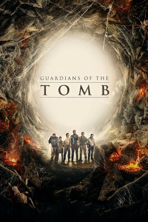

#8526 Guardians of the Tomb
 gesehen am 19.03.2018
gesehen am 19.03.2018
 
 IMDB-Wertung: 4.5 / 10
IMDB-Wertung: 4.5 / 10  Metascore: 0
Metascore: 0 
Firmenboss Mason Kitteridge (Kelsey Grammer) ist hinter einer seltenen Blume her, die besondere Regenerationskräfte haben soll. Doch bei der Suche danach ist sein Wissenschaftler Luke (Chun Wu) spurlos in einem antiken Labyrinth in der Wüste Chinas verschwunden. Lukes Schwester Jia (Bingbing Li), eine Expertin für giftige Tiere, macht sich mit Kitteridge auf eine Rettungsmission, zu der unter anderem auch ehemalige Teammitglieder von Luke wie der muskelbepackte Sanitäter Ridley (Kellan Lutz) gehören. Immer tiefer dringen sie in das antike Labyrinth vor, wo sie sich bald uralter chinesischer Magie entgegenstellen müssen und mit einem Schwarm tödlicher, menschenfressender Spinnen konfrontiert werden. Um zu entkommen, müssen sie das Geheimnis hinter den übermäßig mächtigen und intelligenten Tieren enthüllen…
Jahr: 2018
Dauer: 97 Minuten
FSK: 12
Land: China Studio: Asia ReleasingTonspuren: DD5.1 - ,
Untertitel:
Auflösung: 1080p (1920x800) Größe: 4136 MB
Genre: Action, Abenteuer
Regisseur: Kimble Rendall
Drehbuch: Gary Hamilton
Soundtrack: Roc Chen
Darsteller:
 Bingbing Li als Jia
Bingbing Li als Jia Kellan Lutz als Jack Ridley
Kellan Lutz als Jack Ridley Kelsey Grammer als Mason
Kelsey Grammer als Mason- Yasmin Kassim als Lisa
- Stef Dawson als Milly Piper
 Shane Jacobson als Gary
Shane Jacobson als Gary- Chloe Guy als Little Girl
- Ryan Johnson als Ethan
- Tim Draxl als Andrew
- Christine Milo als Emperor's Courtier
- Chun Wu als Luke
- Victoria Liu als Concubine
- Jason Chong als Chen Xhu
- Kent Lee als Emperor's Attendant #1
- Eva Liu als Yin
- Jip Panosot als Imperial Concubine
- Lawrence Mah als Wu Fu
- Warren Lee als Emperor
- Qianhua Chen als Young Jia
- Bing Hamilton als Little Boy
Datei: X:\2018(G-M)\Guardians of the Tomb (2018, FSK12, 1920x800).mkv seit 19.03.2018
Festplatte: HD 2018(G-Z)-2019(A-Z)
 Es gibt insgesamt 138 Filme in der Gruppe '2018(G-M)'
Es gibt insgesamt 138 Filme in der Gruppe '2018(G-M)'